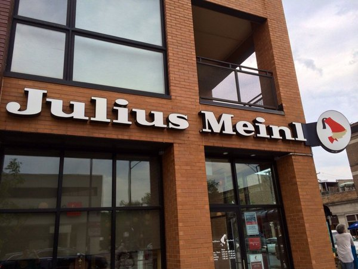

汉语谈话 (Mandarin Conversation) @ Julius Meinl¶
This event will be conducted in Mandarin. Please come prepared.
邀请热爱讲中文的朋友们来参加我们的聚会！我们将在晚上7点相见，地点是Julius Meinl，一家欧式咖啡厅（离咖啡线的Southport站和红线的Addison站比较近）。聚会最主要的规则是：以汉语为主—也就是说，尽量少说英文。当然，我们不在乎你偶尔穿插一两个英文词，因为连汉语母语者也经常这么做。你不必拥有流利的口语，但我们期待你至少能回答简单的问题，比如来自哪里，住在哪里，为什么学中文，等等。快来加入我们吧！